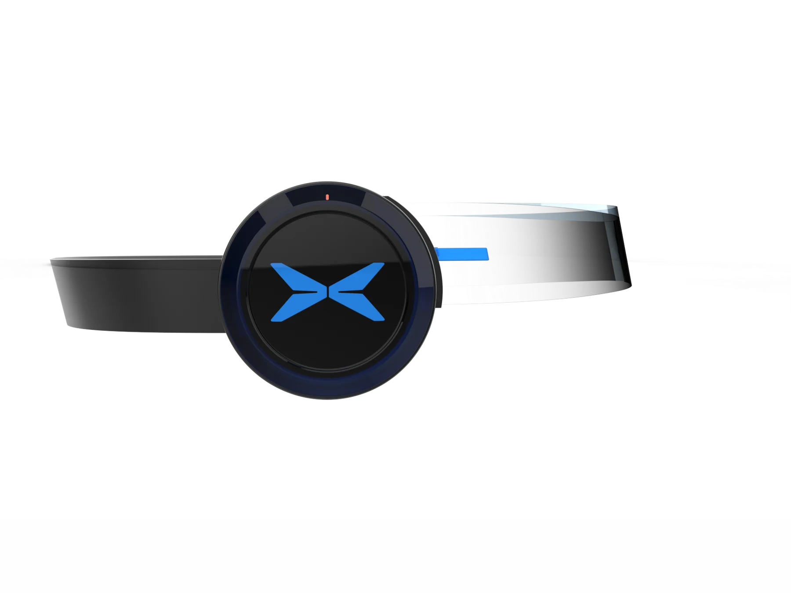

交互演示 / 模拟设备与路线
READY WHEN YOU ARE
让视野，
连接未来。

FutureVision / 01DEVICE STATUS
设备待连接
体验眼镜与耳机协同工作
眼镜 + 耳机—
SOUND FOR THE JOURNEY
听见，
沿途的节奏。
FVOPEN SKY
FUTUREVISION / SOUND STUDYOpen Sky
轻盈 / 合成氛围音
0:003:00
原创合成氛围音，用于交互演示。
MAKE IT YOURS
舒适，
由你设定。
↑ 200 m显示预览
导航声音提示
显示下一段路程提示
声音模式
保留环境感知 · 概念状态演示
设备连接
未连接